09 · Paralleles Rechnen (Multicore) & Finale
Mikrocomputertechnik 3 · Gemeinsame Daten, atomare Updates und begrenzte Beschleunigung
Prof. Dr.-Ing. Daniel Klünder
Mehrere Kerne: gemeinsame Werte richtig nutzen
- Vorlesung 8: gleichartige Rechnung und lokale Wiederverwendung
- Heute: mehrere Ausführungsfäden auf gemeinsamen Daten
- Kopien koordinieren, Updates schützen, Daten geordnet übergeben
- Zum Abschluss: Grenzen der Beschleunigung und Systemwiederholung
Voraussetzungen und drei Leitfragen
- Arrays, Load/Store und Write-Back-Caches aus Vorlesung 2
- Interrupt-Kontexte aus Vorlesung 3; DMA-Ownership aus Vorlesung 6
- Abhängigkeit und interne Parallelität aus Vorlesungen 7–8
- Welche Kopie gilt? Welches Update ist unteilbar? Wann gelten weitere Daten?
Vier Schulstunden: Ablauf
| 1 |
Threads, Kohärenz und MESI: 35 min |
Aufgaben 1–2: 10 min |
| 2 |
Verlorene Updates und LR/SC: 30 min |
Aufgabe 3: 15 min |
| 3 |
Speicherordnung, Locks und Interrupts: 30 min |
Aufgabe 4: 15 min |
| 4 |
Amdahl und Systemwiederholung: 15 min |
Aufgaben 5–6: 15 min; Quiz: 15 min |
Thread, Hart und Kern auseinanderhalten
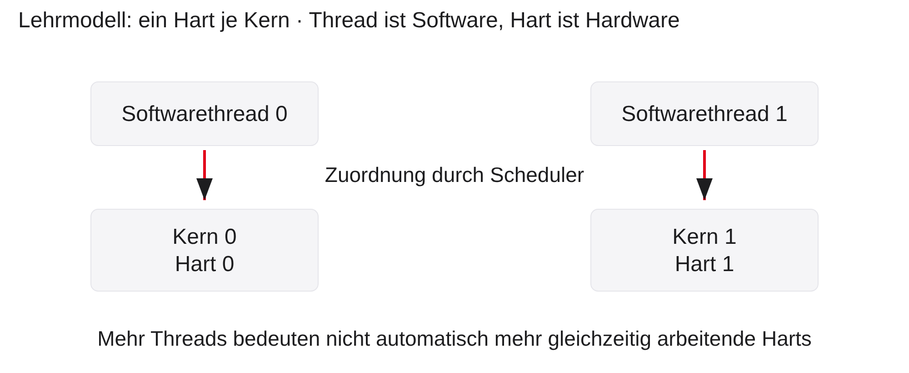
Ein Thread ist Software; ein Hart ist eine Hardware-Ausführungsinstanz.
TLP ergänzt ILP und DLP
| ILP |
unabhängige Befehle |
Load und unabhängige Addition |
| DLP |
gleiche Arbeit an vielen Daten |
mehrere elementweise Produkte |
| TLP |
mehrere Ausführungsfäden |
zwei getrennte Arraybereiche |
Ein Thread kann selbst Vektoren verwenden; mehrere Kerne teilen trotzdem Ressourcen.
Erst Arbeit und Ergebnisse aufteilen
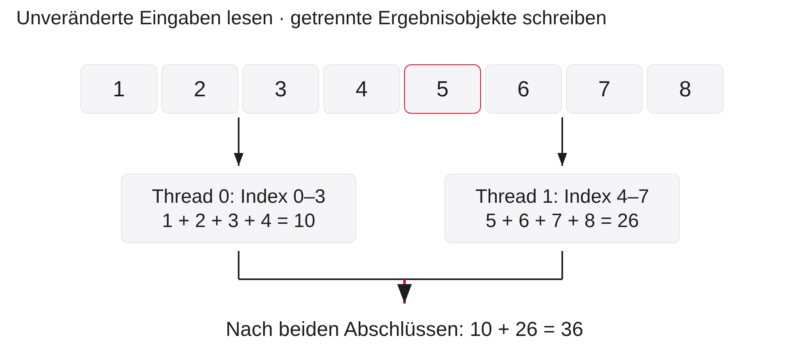
\[\sum_{i=0}^{7}x_i=\sum_{i=0}^{3}x_i+\sum_{i=4}^{7}x_i=10+26=36\]
SMP und AMP beschreiben eine Organisation
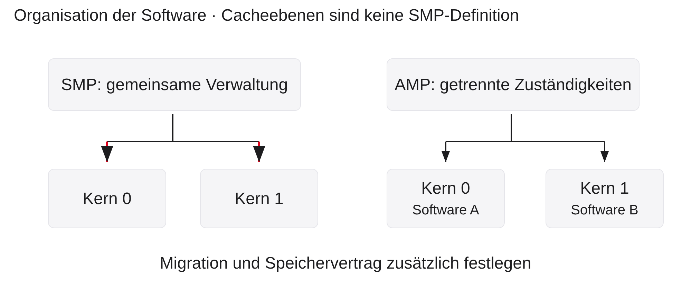
Gleicher Speicherzugriff bestimmt noch nicht jede Cache- oder Gerätearchitektur.
Welche Teilnehmer gehören zur Kohärenzdomäne?
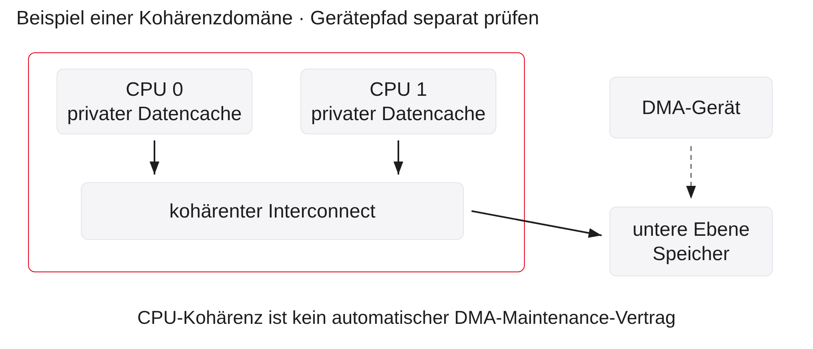
DMA-Maintenance und atomare CPU-Zugriffe bleiben eigene Verträge.
Write-Back: unten darf noch ein alter Wert stehen
- Variable \(x\): Anfangswert \(0\)
- Kern 0 hält eine gültige geänderte Kopie mit \(x=5\)
- Der untere Speicherstand darf im Write-Back-Modell noch \(0\) sein
- Ein kohärenter Leser muss dennoch den aktuellen Wert erhalten
Write-Through allein beseitigt keine fremde Kopie
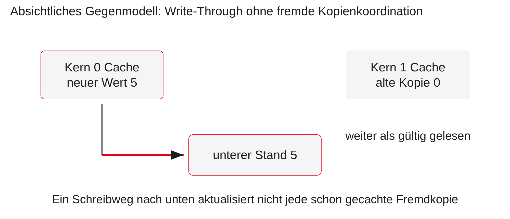
Eine Änderung unten macht eine bereits gecachte Fremdkopie nicht automatisch ungültig.
Drei Mechanismen beantworten drei Fragen
Ein kohärenter Zähler ist noch kein atomarer Zähler.
Snooping und Directory: Anfragen koordinieren
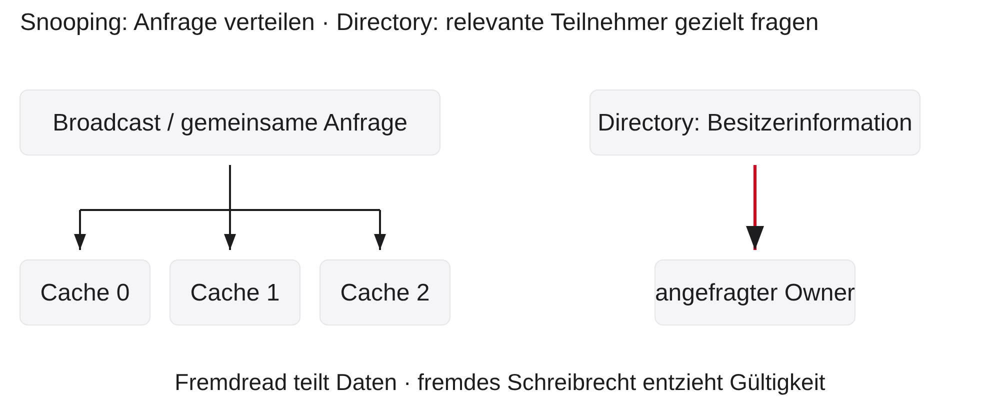
Ein Fremdread und ein fremder Schreibrechtswunsch lösen unterschiedliche Reaktionen aus.
MESI: Gültigkeit und Schreibrecht je Zeile
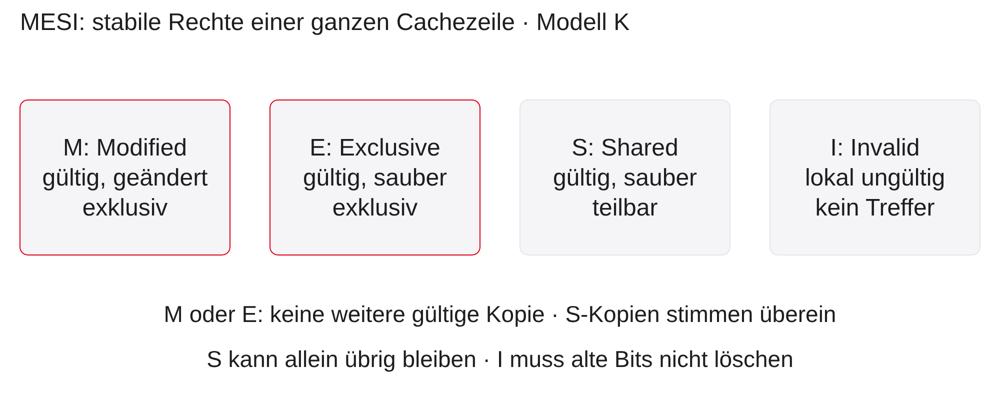
Lehrmodell K: zwei Datencaches, Write-Back, Write-Allocate, unterer Stand \(L\).
E erlaubt den stillen Wechsel nach M
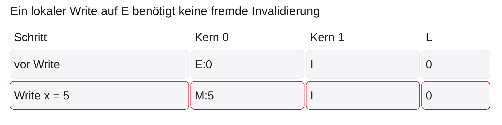
Keine fremde gültige Kopie muss bei diesem Schritt invalidiert werden.
Ein Read-Miss hat unterschiedliche Lieferanten
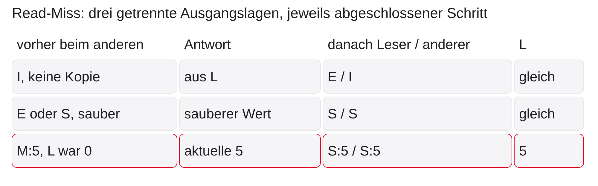
Eine alte untere Antwort darf den aktuellen M-Wert nicht ersetzen.
Schreiben auf S braucht abgeschlossene Übernahme
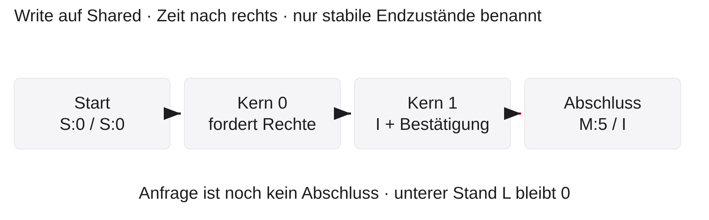
Anfrage senden, fremde Gültigkeit entziehen und Abschluss sind verschiedene Ereignisse.
MESI-Folge mit Zuständen und Datenwerten
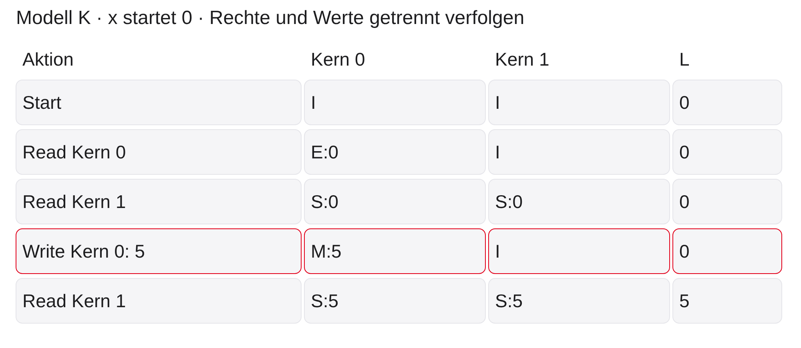
Jede Zeile zeigt einen abgeschlossenen Schritt im Lehrmodell K.
Auswerfen: geänderte Daten erhalten
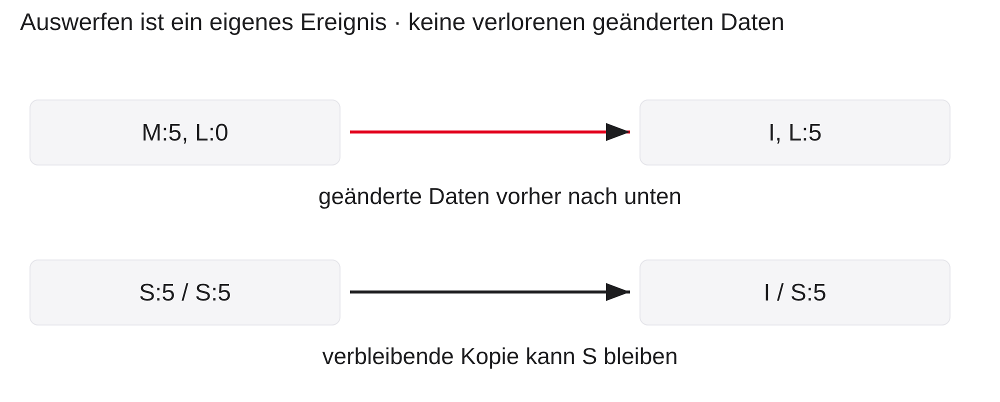
Eine verbleibende S-Kopie wird nicht allein durch fremdes Auswerfen automatisch E.
False Sharing: verschiedene Variablen, eine Zeile
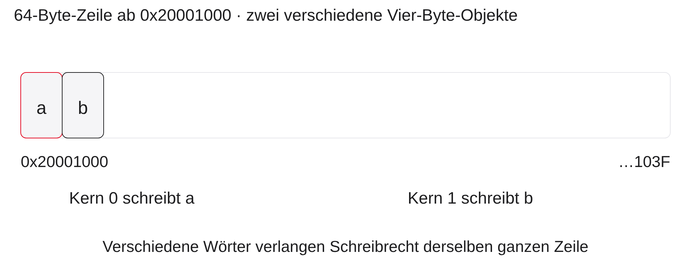
Wechselnde Schreiber können die ganze Zeile zwischen den Kernen verschieben.
Basis und Abstand gemeinsam prüfen
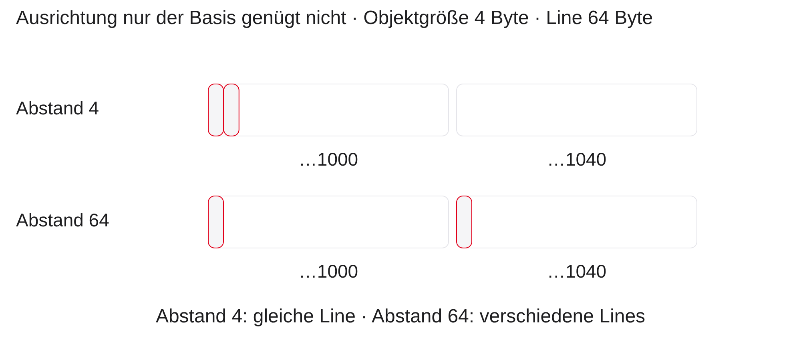
Padding kostet Platz und repariert kein konkurrierendes Update derselben Variable.
Papierphase 1: Zustände und Zeilengrenzen
Übungsblatt, Aufgaben 1–2 · 10 Minuten
- Zustandsfolge mit Werten und unterem Stand ausfüllen
- Exklusivität und saubere Kopien als Invarianten prüfen
- False Sharing aus Adresse, Größe und Abstand begründen
Ein Inkrement kann drei Schritte enthalten
# RV32I-Lehrfolge; s1: ausgerichtetes Wort, Anfangswert 0
lw t0, 0(s1)
addi t0, t0, 1
sw t0, 0(s1)
Read → Modify → Write ist hier keine unteilbare Gruppe.
Lost Update trotz kohärenter Einzelzugriffe
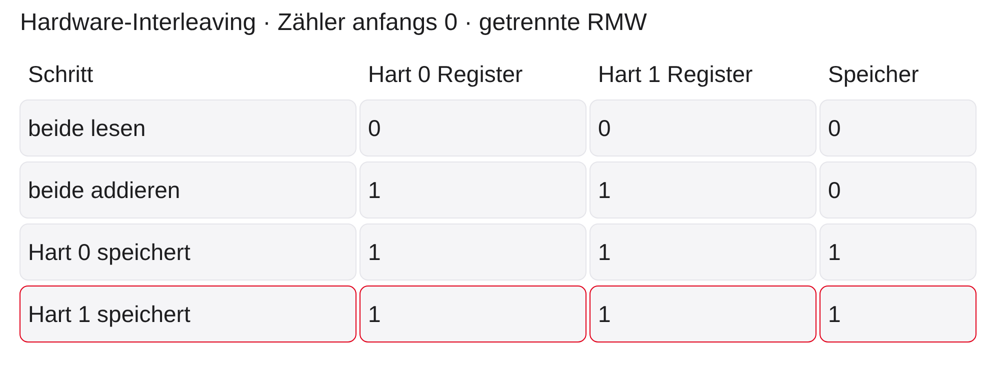
Das Diagramm beschreibt ein Hardware-Interleaving, keine Ergebnisgarantie fehlerhaften C-Codes.
Race Condition und C-Data-Race unterscheiden
| Race Condition |
Ablaufreihenfolge gefährdet die gewünschte Programmlogik |
| C11-Data-Race |
konkurrierende Konfliktzugriffe ohne ausreichende Synchronisation |
| Atomare Load/Store einzeln |
können trotzdem ein getrenntes Update verlieren |
C11-Data-Race bedeutet undefiniertes Verhalten, keine zugesicherte Auswahl aus zwei Endwerten.
Auch atomarer Check und Set bleiben getrennt
#include <stdbool.h>
#include <stdatomic.h>
static atomic_bool lock = false;
bool broken_try_lock(void) {
if (atomic_load_explicit(&lock, memory_order_relaxed))
return false;
atomic_store_explicit(&lock, true, memory_order_relaxed);
return true;
}
Absichtlich falsche Übernahme: Zwei Aufrufer können beide Erfolg melden.
Die atomare RMW entscheidet die Übernahme
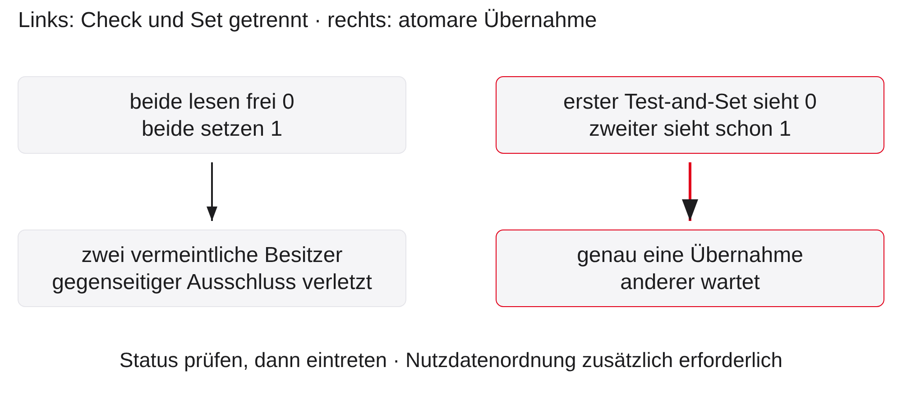
Der frühere Wert entscheidet; der Speicherwert und der Status sind getrennt zu lesen.
RISC-V-Atomics brauchen Ziel und Speichervertrag
- A-Erweiterung: LR/SC und AMO als atomare Primitive
- Unterstützter Kern und unterstützte gewöhnliche Speicherregion
.w: vier Byte breit und hier auf vier Byte ausgerichtet- Kein universeller Ersatz für MMIO oder nichtkohärente DMA-Übergaben
LR liest; SC versucht den bedingten Store
lr.w |
Wort lesen und Reservation registrieren |
erfolgreicher sc.w |
Wort schreiben, Status \(0\) |
fehlgeschlagener sc.w |
kein Datenstore, Status ungleich \(0\) |
Ein gelesener Wert \(0\) ist noch kein Übernahmeerfolg.
Zwei gelesene Nullen, nur eine Übernahme
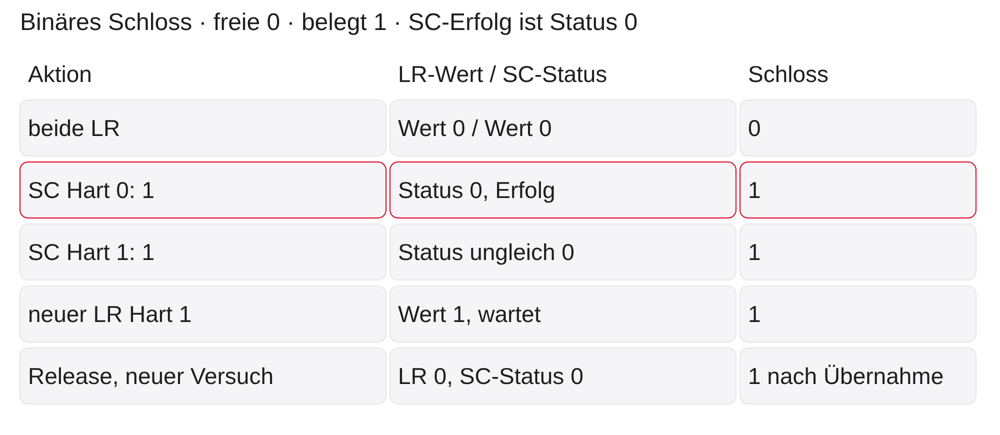
Ein belegt gelesenes Schloss wird nicht auf \(2\) inkrementiert.
Papierphase 2: Update und SC-Status
Übungsblatt, Aufgabe 3 · 15 Minuten
- Load, lokale Änderung und Store zeitlich verschachteln
- Hardwaremodell von undefiniertem C-Data-Race unterscheiden
- LR-Wert, SC-Status und neuen Schlosswert getrennt eintragen
Acquire und Release ordnen die Nutzdaten
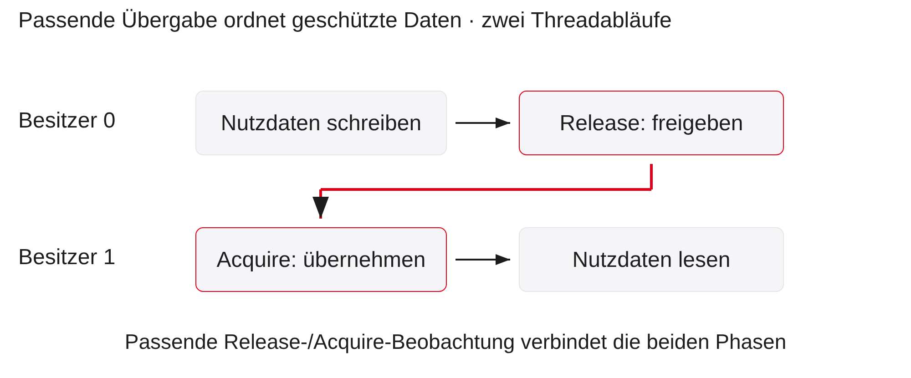
Atomare Übernahme und geordnete Nutzung sind zwei Anforderungen.
LR/SC-Übernahme mit Acquire
# Lehrfolge: a0 zeigt auf ausgerichtetes Schloss, 0 frei
acquire:
lr.w.aq t0, (a0)
bnez t0, acquire
li t1, 1
sc.w t2, t1, (a0)
bnez t2, acquire
# Erst jetzt: geschuetzte Daten nutzen
Gewöhnlicher Speicher mit zugesicherter Unterstützung; kein universelles ISR-Rezept.
Freigeben: Daten vor dem freien Schloss
# Nach dem geschuetzten Abschnitt; a0 ist dieselbe Lockadresse
fence rw, w
sw zero, 0(a0)
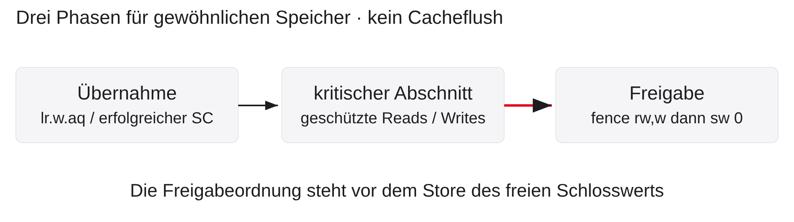
AMO: alten Wert zurückgeben, neuen speichern
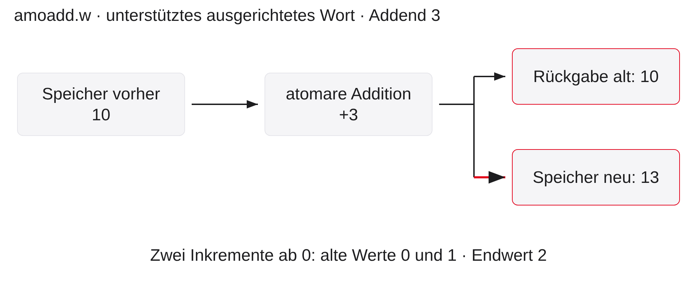
Ohne .aq/.rl bleibt die RMW atomar; zusätzliche Ordnung anderer Daten fehlt.
C11: ein atomarer Zähler
#include <stdatomic.h>
static atomic_uint count = 0;
void increment(void) {
atomic_fetch_add_explicit(
&count, 1u, memory_order_relaxed);
}
Zwei fertige Worker mit je \(N\) Inkrementen ergeben \(2N\) ohne Zahlenüberlauf.
C11-Lock: Test-and-Set und Clear
#include <stdatomic.h>
static atomic_flag lock = ATOMIC_FLAG_INIT;
void take_lock(void) {
while (atomic_flag_test_and_set_explicit(
&lock, memory_order_acquire)) { }
}
void drop_lock(void) {
atomic_flag_clear_explicit(&lock, memory_order_release);
}
Alle Zugreifer müssen denselben Lock für dieselben geschützten Daten nutzen.
Einmalige Veröffentlichung: bereit heißt Daten bereit
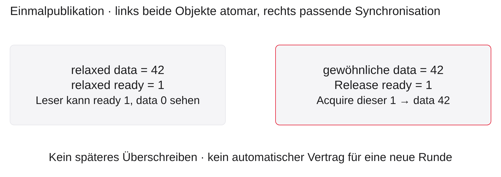
Einmaliger Produzent, kein späterer Rewrite; Acquire muss den passenden Release-Wert lesen.
Deadlock: korrekte Atomics, falsche Wartebeziehung
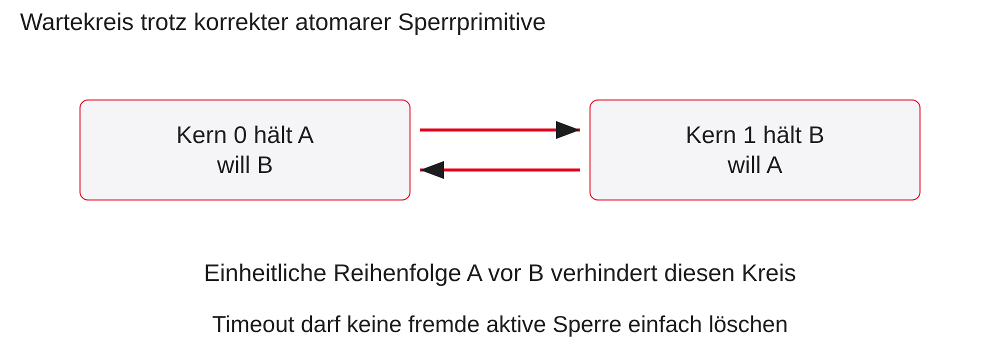
Atomizität garantiert weder Fortschritt noch eine günstige Lockreihenfolge.
Die ISR darf ihren unterbrochenen Halter nicht blockieren
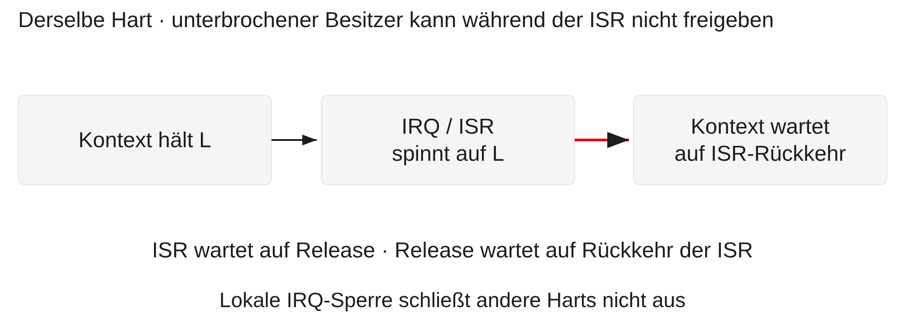
Lokale Interrupts sperren hält andere Harts nicht von gemeinsamen Daten fern.
Papierphase 3: Ordnung und Fortschritt
Übungsblatt, Aufgabe 4 · 15 Minuten
- Passende Release-/Acquire-Verbindung für Nutzdaten erklären
- Einen Wartekreis anhand der gehaltenen Locks erkennen
- ISR-Selbstdeadlock von fehlender Atomizität unterscheiden
Amdahl: feste Arbeit enthält serielle Zeit
\[T(N)=T(1)\left(s+\frac{1-s}{N}\right),\qquad
S(N)=\frac{T(1)}{T(N)}\]
- \(s\): serieller Anteil der Ein-Kern-Zeit
- \(N\): gleiche Kerne; ideal verteilbarer Rest
- Feste Aufgabe, perfekte Verteilung, zunächst kein Zusatzaufwand
Vier Kerne sind hier Faktor 2,5
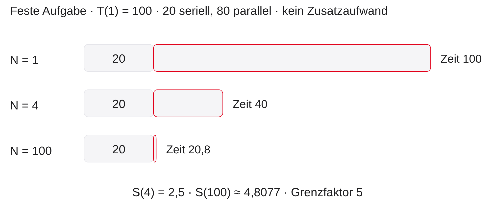
\[S(4)=2{,}5,\quad E(4)=S(4)/4=62{,}5\,\%\]
Kommunikation und Locks kosten Zusatzzeit
\[S(N)=\frac{1}{s+(1-s)/N+h(N)}\]
Bei \(s=0{,}2\), \(N=4\), \(h(4)=0{,}05\):
\[S(4)=1/0{,}45\approx2{,}2222\]
\(h(N)\) zählt Zusatzzeit relativ zu \(T(1)\), keine zusätzliche Kernzahl.
Der langsamste Teil bestimmt den Abschluss
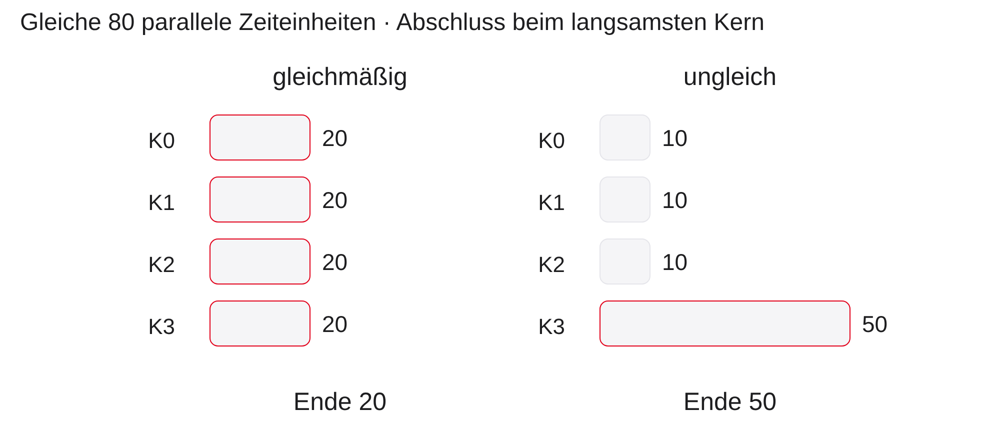
Gleiche Gesamtarbeit garantiert noch keine gleiche Verteilung.
Wiederholung: Cacheadresse und mittlere Zeit
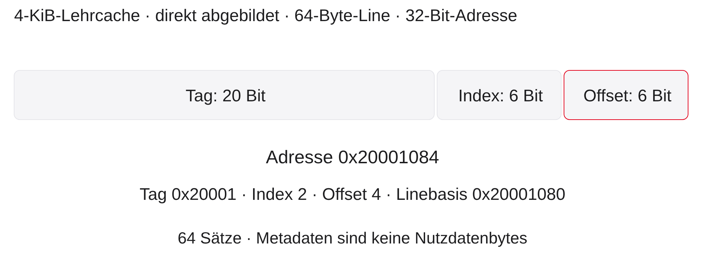
\[\mathrm{AMAT}=2+0{,}1\cdot40=6\ \text{Takte}\]
Wiederholung: Periodenlänge vor Registerwert
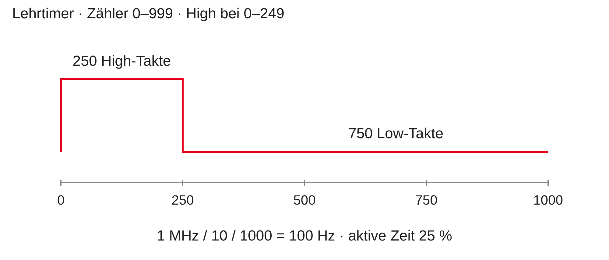
\(f_{\mathrm{PWM}}=10^6/(10\cdot1000)=100\,\mathrm{Hz},\quad D=250/1000=25\,\%\)
Systemweg: vom Sensor zur gemeinsamen Rechnung
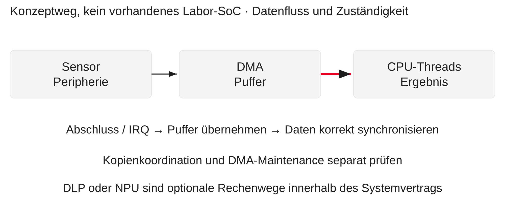
Ein Konzeptplan ist keine Aussage über ein vorhandenes Labor-SoC.
Was der Hostversuch tatsächlich prüft
labs/src/lab09_atomics.c
- Getrennte Teilsummen, anschließend zusammengeführt
- Verlorenes Update als atomare Einzelzugriffsfolge
- Zwei Worker mit atomarem Zähler und mit C11-Lock
- Einmalige Release-/Acquire-Veröffentlichung
RISC-V GCC und Renode sind eigene Zielwerkzeuge; dieser Versuch ist kein Kohärenzbenchmark.
Papierphase 4 und Abschlussquiz
Aufgaben 5–6: 15 Minuten · anschließend Quiz: 15 Minuten
- Speedup, Effizienz und Zusatzaufwand berechnen
- Cachemapping, AMAT und PWM mit Einheiten prüfen
- Zusammenführen: gültige Kopie, unteilbares Update, geordnete Übergabe
Quellen und Schlussfolgerung